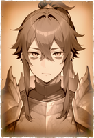

△▼△▼△リオン△▼△▼△ |
|||||||||||||||||||
|  |
|
||||||||||||||||||
|
カムラの里にルーツを持つ男性ハンター。メイン武器はガンランスだが、それ以外にも多数の武器を操る。
沈着な物腰で、誰に対しても丁重に接する。相手が顔馴染みであっても同様。
……なのだが、卒のない能力と性格が祟ってか、変人を呼び寄せやすい体質。
ちなみに、トラブルメーカーへの対処や他の専門知識に思考が割かれる弊害か、あるいは逆に順調すぎると気が抜けるのか、彼自身が初歩的なミスをやらかすこともないではない。 |
|||||||||||||||||||